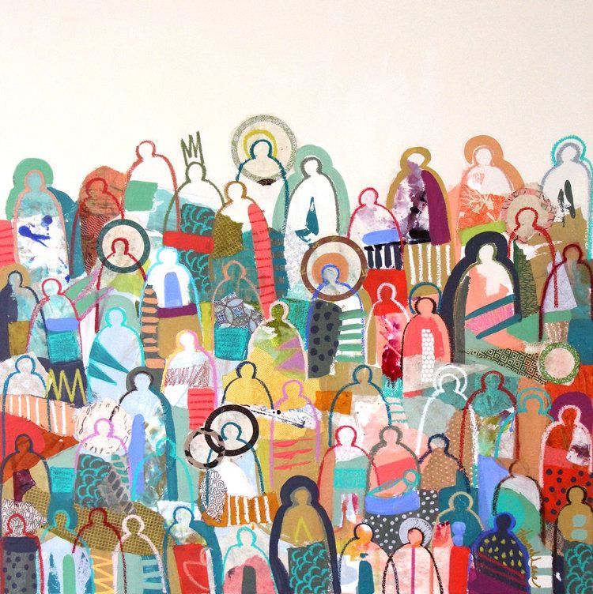
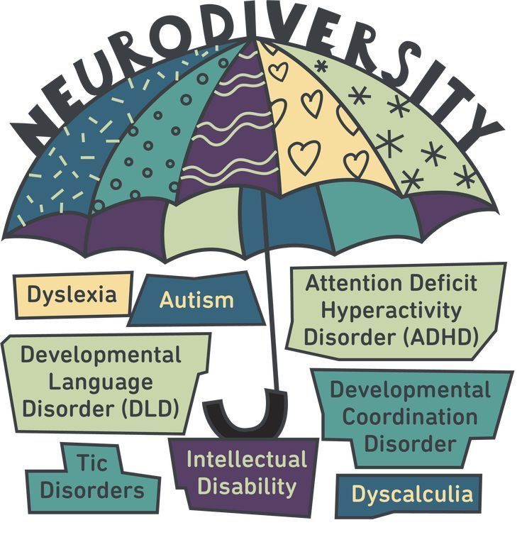

NeuroDiversity
The concept of neurodiversity was introduced during the fight for autism awareness and rights. Psychologists lobbied for it to be considered a different way of functioning rather than a disorder. Sociologist Judy Singer (who is autistic) coined the term ‘neurodiversity’ in 1997.
Neurodiversity is the term that explains the natural variation in everyone’s brain, including thinking processes, information processing and learning approaches ; like a person’s fingerprints, no two brains — not even those of identical twins — are exactly the same. Because of that, there’s no definition of “normal” capabilities for the human brain.

Neurodiversity includes two subcategories:
Neurotypical refers to standard ways of processing information, often seen as “the norm”.
Neurodivergent includes ways of thinking that are outside the typical experience.
That means they have different strengths and challenges from people whose brains don’t have those
differences.
- The possible strengths include better memory, being able to mentally picture three-dimensional (3D) objects easily, the ability to solve complex mathematical calculations in their head, and many more.
- The possible differences include medical disorders, learning disabilities and other conditions. Some neurodivergent people struggle because of systems or processes that don’t give them a chance to show off their strengths or that create new or more intense challenges for them : an accommodation is a way to accept that they’re different or have challenges, and then give them a tool or a way to succeed.
Neurodivergent conditions tend to be invisible, which can create barriers for individuals in
accessing the support they may need to thrive in society.
Most neurodivergent conditions are experienced within a spectrum – meaning that the
experience will differ from person to person. A person can also identify with more than one type
of neurodivergence. Autism, ADHD, dyslexia and dyspraxia are some examples of the most widely recognised
neurodivergent conditions.